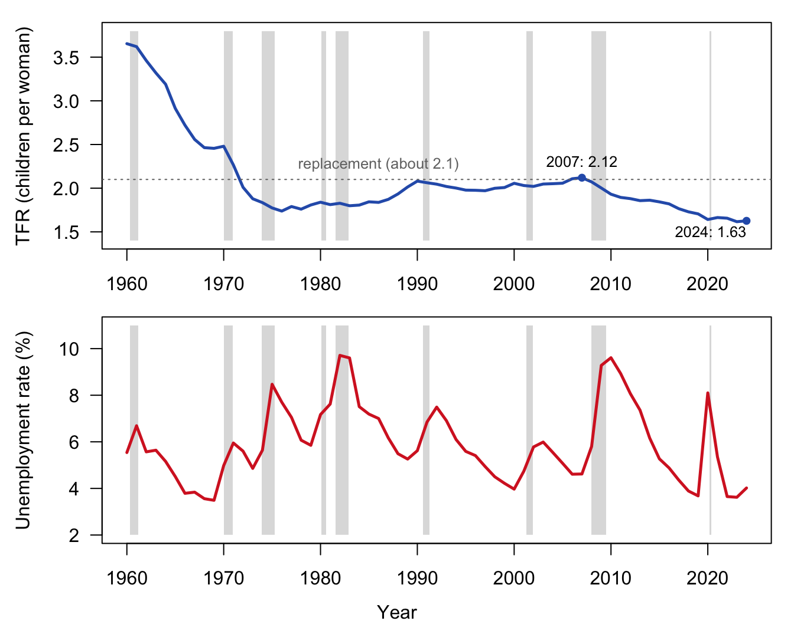
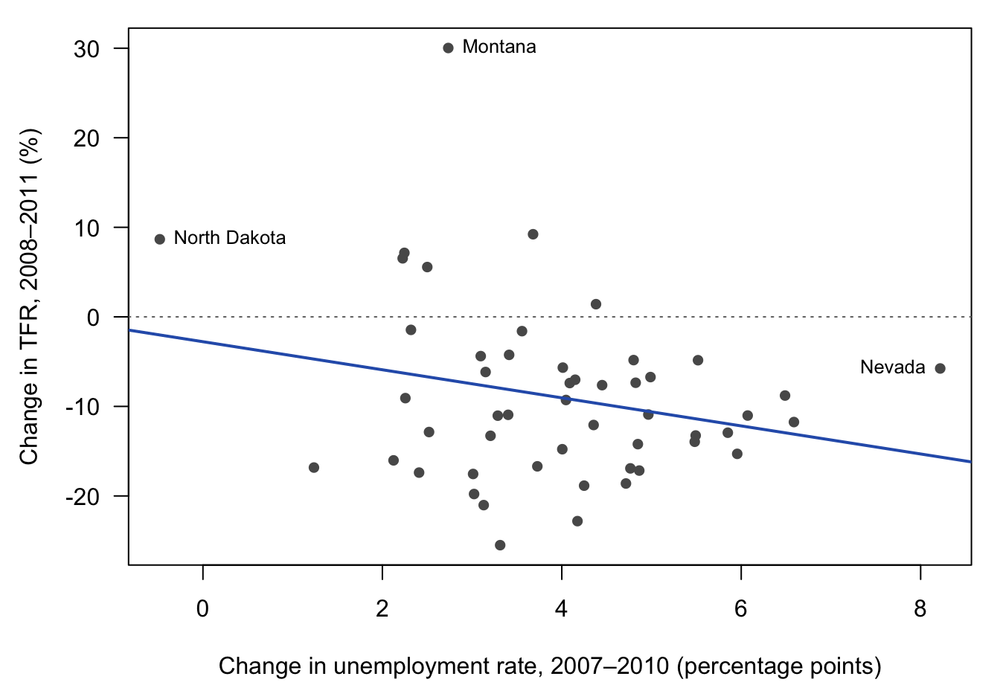

19Fertility and the Economy: The Great Recession and Beyond
Draft: provenance notes (for review)
Optional chapter, based on the 2021 version of this topic (slides “18.Fertility_and_the_Great_Recession_2021”, Week 10 Lecture B; the 2017–2018 recession lab). It is not part of the 2025 course. Margin tags mark material that is not in the course slides or lab. Added · from readings comes from the readings listed for this lecture (Kearney and Levine 2020, both pieces, on the 2021 list; Livingston 2011, on the 2018–2019 lists) or from the study the slides cite, Karaman Örsal and Goldstein (2018, Population Studies 72(1): 109–121; page numbers are the journal’s), plus its 2010 working-paper version for two points the published paper drops. Added · new is from outside the course materials (my framing, general knowledge, recent data, or my own analysis) and needs the closest check. Untagged material follows the 2021 slides and the recession lab.
In this chapter. Do people have fewer children in bad times, or more? The answer has changed. Through the middle of the twentieth century, American fertility often moved against the business cycle. Since the 1970s it has moved with it, and the Great Recession of 2007–2009 was followed by a fall in births that never reversed. We use the cost-of-time model from Chapter 10 to ask why, look at the evidence across states, distinguish having children later from having fewer, and check a famous forecast: the “COVID baby bust.”
Readings this chapter draws on. Kearney and Levine (2020), “Half a million fewer children? The coming COVID baby bust,” Brookings, and their December 2020 update (on the 2021 reading list); Livingston (2011), “In a Down Economy, Fewer Births,” Pew Research Center (on the 2018 and 2019 lists).
19.1 A question from spring 2020
In the spring of 2020, as COVID-19 closed schools and offices, journalists began to speculate about a coming baby boom: couples stuck at home together, with little else to do. Before reading on, make your own prediction. As a result of the pandemic, will fertility
A. go up,
B. go down, or
C. stay about the same, with some people having more children and others fewer?
Added · from readings Kearney and Levine (2020). The blizzard and blackout myths, and the reference to Udry (1970), are theirs.
Economists Melissa Kearney and Phillip Levine thought the “baby boom” story got the mechanism wrong. Such speculation, they wrote, “is based on persistent myths about birth spikes occurring nine months after blizzards or major electricity blackouts,” which “tend not to hold up to statistical examination.” The pandemic was not a long weekend indoors. It was “leading to tremendous economic loss, uncertainty, and insecurity. That is why birth rates will tumble.”
As your slides put it, there’s more to having kids than sex. The economist’s question is what a pandemic does to the costs and benefits of a child. In the language of the cost-of-time model (Chapter 10), a downturn has two effects that pull in opposite directions:
An income effect. Families have less income, and if children are a normal good, they want fewer.
A substitution (price) effect. When wages are low or jobs are scarce, the time spent raising a child costs less in forgone earnings, so children become relatively cheaper.
Which one wins is an empirical question, and, as we’ll see, the answer has changed over time. In the longer run, other forces matter too: worries about climate, politics, and now pandemics might mean fewer children; renewed attention to family and the meaning of life might mean more; uncertainty about long-term economic prospects might mean fewer.
Added · from readings Kearney and Levine (2020).
In their own words
“As any parent will tell you, children come at a cost. They require outlays of money, time, and energy. Certainly, they are also a source of joy and love. In the analytical terms of economic modeling, adults ‘choose’ the quantity of children that maximizes their lifetime well-being subject to the costs associated with childbearing.” (Kearney and Levine 2020)
19.2 Income and substitution effects, revisited
19.2.1 A history that points both ways
Over the long run, U.S. fertility fell from about 7 children per woman in 1800 to about 2 today, with one great exception, the postwar baby boom. In lecture we mark different stretches of this history according to which effect seems to dominate, and ask what was happening to the economy in each. The point is that the sign of the relationship between good times and births has not been constant.
Added · from readings Karaman Örsal and Goldstein (2018), p. 109. The 1948–1975 period of Butz and Ward’s study is from the 2010 working-paper version, p. 3. The study is not on the reading list; it is the source of your slides 15–16.
In the 1970s and 1980s, careful studies found that fertility was, if anything, counter-cyclical. In a classic analysis of the United States from 1948 to 1975, Butz and Ward “concluded that fertility was counter-cyclical, with fertility falling in good times, as the opportunity costs of childbearing rose” (Karaman Örsal and Goldstein 2018, p. 109). In the language of the model, the substitution effect dominated. Good times were the most expensive times to have a child.
19.2.2 The sign flips
Since then, the relationship has flipped. Your slides show results from a study of developed countries by Deniz Karaman Örsal and Joshua Goldstein, published in Population Studies in 2018. In the United States and Austria from 1957 to 1974, years with higher unemployment tended to be followed by higher fertility. From 1975 to 2014, higher unemployment was followed by lower fertility.
Added · from readings Karaman Örsal and Goldstein (2018), pp. 109–115. The plain-language explanations of fixed effects and semi-elasticities are mine.
Here is what the study did:
Data. Each country’s total fertility rate, mostly from the Human Fertility Database, and its unemployment rate, from the OECD. Unemployment is measured the year before the births, “to account for the time between conception and birth” (p. 110).
Countries and years. The main analysis uses the 15 OECD countries with data back to 1957: Austria, Canada, Denmark, Finland, France, Germany, Italy, Japan, the Netherlands, Portugal, Spain, Sweden, Switzerland, the UK, and the USA, for 1957–2014. A check uses 22 countries over a shorter period, 1976–2014.
Method. A regression of (the log of) each country’s TFR on its unemployment rate the year before, comparing each country with itself over time. The coefficient is a semi-elasticity: the percent change in the TFR when unemployment rises by one percentage point. A negative number means pro-cyclical fertility (more unemployment, fewer births); a positive number means counter-cyclical fertility.
Over the whole period, the estimate is −0.048: “when the unemployment rate increases by about one unit (one percentage point) then the fertility rate declines by about 4.8 per cent” (p. 114). When the authors also control for each year’s conditions common to all countries (year fixed effects), the decline is about 1.5 percent.
The key result is what happens when the effect is allowed to differ across periods of four or five years. Your slide 16 is the paper’s Figure 3(a). The estimates are positive, about +0.05 to +0.08, in 1957–60, 1961–65, and 1966–70. They turn slightly negative in 1971–75 (not statistically different from zero), and are clearly negative, about −0.03 to −0.05, in every period since. In the authors’ words, the figure “provides eye-catching evidence of fertility being counter-cyclical until the beginning of the 1970s and pro-cyclical thereafter” (p. 115). The 22-country check, for 1976–2014, finds clearly pro-cyclical fertility from the early 1980s on, and the same holds for women’s and for men’s unemployment separately. Fertility has become pro-cyclical: good times, more children; bad times, fewer.
Added · from readings Karaman Örsal and Goldstein (2018), p. 117. The values above for each period are read off Figure 3(a), so they are approximate.
How big is the effect today? The authors’ summary is that a one-point rise in unemployment “on average reduces the period TFR by about 1.3 per cent according to the fixed effects model and 0.5 per cent according to the first-differenced model when year fixed effects are also taken into account” (p. 117). (The paper writes “a 1 per cent increase in the unemployment rate” here, but it means one percentage point.) Their verdict on the older finding: “the prominent (and controversial) counter-cyclical fertility result found by Butz and Ward (1979) no longer holds in the industrialized world” (p. 117).
Added · from readingsOn slide 16’s note (“+0.06 means a 1% increase in UE reduces TFR by 6% (e.g., from 2.0 to 1.88)”): the published paper settles it. A negative coefficient means pro-cyclical: β = −0.0477 means a one-point rise in unemployment lowers fertility by about 4.8 percent (p. 114). So the early-period +0.06 means a one-point rise in unemployment raised the TFR by about 6 percent (2.0 to about 2.12). The slide’s example, 2.0 to 1.88, would need a coefficient of −0.06, more negative than any post-1970 estimate. The note has the direction reversed, and “1%” should be “1 percentage point.” Suggested wording: “+0.06 means a 1-point rise in UE raises TFR by 6% (2.0 to 2.12); −0.03 means it lowers TFR by 3% (2.0 to 1.94).”
19.2.3 Why might income effects now dominate?
Your slides suggest several explanations within our models:
Rising fixed costs of children (a higher \(p\)). If the money costs of children rise relative to the time costs, the income effect gains weight. (Recall from Chapter 10: the substitution effect is strongest when the time cost of children is large compared with their money cost.)
Paid childcare, which turns time costs into money costs, shifting \(c\) toward \(p\). Or, equivalently, families think of children as paid for out of income \(I\) rather than out of the mother’s time.
Ratcheting quality. If parents’ standards for what each child should have (the \(q\) of the quantity–quality model) rise in good times and don’t fall in bad times, a downturn squeezes the number of children.
And explanations outside them:
Jobs versus careers for women. The opportunity cost of a child is not just wages forgone today but a career penalty. A recession may lower current wages without lowering the long-run career penalty at all.
A “tempo” artifact, which we take up below.
Added · from readings Karaman Örsal and Goldstein (2018), p. 117, and the 2010 working-paper version, pp. 1–3. The published paper does not discuss parental leave.
The Karaman Örsal–Goldstein study adds two more. The published paper ends with the first: “in the new world of dual-earning couples, economic conditions matter more than ever in the decision to have children” (p. 117). When the household depends on two incomes, losing either job is a blow to income, not a cheap moment to stay home. The second, from the 2010 working-paper version, is the spread of earnings-related parental leave. If benefits depend on prior earnings, it may have “encouraged women who have yet to find permanent positions to postpone childbearing” until they have a stable job. That makes fertility more sensitive to job prospects.
19.3 The Great Recession
19.3.1 A recession, and no rebound
Figure 19.1 shows U.S. fertility and unemployment since 1960, with recessions shaded.
Show the R code
yrs <-1960:2024r1 <- rm[rm$t >=1960, ]starts <- r1$t[r1$USREC ==1&c(0, head(r1$USREC, -1)) ==0]ends <- r1$t[r1$USREC ==1&c(tail(r1$USREC, -1), 0) ==0] +1/12shade <-function(ylim) rect(starts, ylim[1], ends, ylim[2], col = col_rec, border =NA)op <-par(mfrow =c(2, 1), mar =c(2, 4.5, 1, 1), oma =c(2, 0, 0, 0), las =1)yl <-c(1.4, 3.8)plot(wb$year, wb$tfr, type ="n", ylim = yl, xlim =range(yrs),xlab ="", ylab ="TFR (children per woman)")shade(yl)lines(wb$year, wb$tfr, col = col_tfr, lwd =2.5)abline(h =2.1, lty =3, col = col_grey)text(1986, 2.1, "replacement (about 2.1)", pos =3, col = col_grey, cex =0.8)for (y inc(2007, 2024)) {points(y, tfr_in(y), pch =19, col = col_tfr, cex =0.8)if (y ==2024) text(y, tfr_in(y) -0.06, sprintf("%d: %.2f", y, tfr_in(y)), adj =c(1, 1), cex =0.8)elsetext(y, tfr_in(y), sprintf("%d: %.2f", y, tfr_in(y)), pos =3, cex =0.8)}u <- ue[ue$year %in% yrs, ]yl2 <-c(2, 11)plot(u$year, u$unemployment_rate, type ="n", ylim = yl2, xlim =range(yrs),xlab ="", ylab ="Unemployment rate (%)")shade(yl2)lines(u$year, u$unemployment_rate, col = col_ue, lwd =2.5)mtext("Year", side =1, outer =TRUE, line =0.5)par(op)

Figure 19.1: U.S. total fertility rate (top) and unemployment rate (bottom; annual averages), 1960–2024. Grey bands mark NBER-dated recessions. Sources: World Bank (TFR); Bureau of Labor Statistics and NBER via FRED (unemployment, recessions).
The Great Recession officially began in December 2007. Unemployment rose from 4.6 percent in 2007 to 9.6 percent in 2010, and the TFR fell from 2.12 in 2007 to 1.93 in 2010. That much fits a pro-cyclical story. The surprise came next. By 2015 unemployment was back to about 5 percent, and by 2019 it was the lowest in half a century. But fertility never came back. As your slides note, the TFR kept drifting down: 1.85 in 2013, 1.86 in 2014, 1.84 in 2015, 1.82 in 2016, 1.77 in 2017, and 1.73 in 2018.
Added · new The figure uses the World Bank TFR series and FRED unemployment, extended to 2024. The slides’ figure (1933–2015) and table (2013–2018) use slightly different TFR estimates. The 2013–2018 values in the text are the slides’.
19.3.2 What the first studies found
Added · from readings Livingston (2011), pp. 1–6.
Within a few years of the recession’s onset, a Pew Research Center analysis by Gretchen Livingston reported that “a sharp decline in fertility rates in the United States that started in 2008 is closely linked to the souring of the economy that began about the same time.” Its main findings:
A record, then a fall. The year 2007 saw a record 4,316,233 births in the United States. The general fertility rate (births per 1,000 women aged 15–44) fell from 69.6 in 2007 to 66.7 in 2009, and provisionally to 64.7 in 2010.
Harder-hit states saw bigger drops. Six of seven state-level economic indicators were linked to subsequent changes in fertility. The strongest was the change in the unemployment rate from 2007 to 2008, correlated −0.72 with the change in the fertility rate from 2008 to 2009. North Dakota, “which experienced one of the nation’s lowest unemployment rates (3.1%) in 2008, was the only state to show even a slight increase (0.7%) in births from 2008 to 2009.”
Harder-hit groups saw bigger drops. Hispanic households, which lost the most in employment and wealth, saw birth rates fall 5.9 percent from 2008 to 2009, compared with 2.4 percent for black women and 1.6 percent for white women.
Younger women cut back most. Fertility fell for every age group except women 40 and older.
Livingston was careful: “This does not conclusively prove that the economic changes led to fertility changes.” But in 48 of 51 states (including the District of Columbia), fertility declines came within one to two years of the start of economic declines, about the time it takes to act on a decision about a pregnancy.
Added · from readings Kearney and Levine (2020). The studies cited in this paragraph are as they describe them.
A decade later, Kearney and Levine summarized the case in similar terms. The birth rate fell from 69.1 per 1,000 women in 2007 to 63.0 in 2012: “That nine percent drop meant roughly 400,000 fewer births.” Across metropolitan areas, “a one percentage-point increase in the unemployment rate is associated with a 1.4 percent decrease in birth rates.” The evidence goes beyond recessions. Marital births tracked earnings in coal-producing areas during the coal boom and bust of the 1970s and 1980s. Births rose in counties that got richer from fracking. Births fell in places that lost jobs to import competition from China.
In their own words: income and price effects in the housing market
“Increases in house prices lead to increases in births among existing home owners, consistent with a positive wealth or home equity effect, while … increases in house prices lead to reductions in births among renters, consistent with a negative price effect.” (Kearney and Levine 2020, describing Dettling and Kearney 2014)
The same rise in house prices makes owners richer (an income effect) but makes the extra bedroom more expensive for renters (a price effect). The model predicts opposite responses, and that’s what the data show.
Added · new The two sentences after the quote are my gloss.
19.4 Data in action: comparing states
If the economy drives fertility, states hit harder by the recession should have seen bigger declines. Your slides summarize the finding: places with the biggest increases in unemployment and the most housing foreclosures had the biggest drops, and places with a fracking boom, like North Dakota, actually saw an increase. Figure 19.2 shows the comparison using the state data from the recession lab.
Show the R code
w <-reshape(st[, c("state.name", "year", "tfr", "ue")], idvar ="state.name",timevar ="year", direction ="wide")w$dUE <-100* (w$ue.2010- w$ue.2007)w$dT <-100* (log(w$tfr.2011) -log(w$tfr.2008))fit <-lm(dT ~ dUE, data = w)op <-par(mar =c(4.2, 4.5, 1, 1), las =1)plot(w$dUE, w$dT, pch =19, col ="grey35", cex =0.85,xlab ="Change in unemployment rate, 2007–2010 (percentage points)",ylab ="Change in TFR, 2008–2011 (%)")abline(h =0, lty =3, col = col_grey)abline(fit, lwd =2, col = col_tfr)lab_pos <-c("North Dakota"=4, "Nevada"=2, "Montana"=4)k <-match(names(lab_pos), w$state.name)text(w$dUE[k], w$dT[k], names(lab_pos), pos = lab_pos, cex =0.8)par(op)slope <-coef(fit)[2]; r <-cor(w$dUE, w$dT)

Figure 19.2: Change in unemployment (2007 to 2010, percentage points) and change in the total fertility rate (2008 to 2011, percent) by state, from the recession lab’s American Community Survey estimates. Fertility is measured a year later than unemployment, to allow for the time from decision to birth. The line is a least-squares fit.
On average, each additional percentage point of unemployment goes with a fall in fertility of about 1.6 percent, close to Kearney and Levine’s estimate of 1.4 percent. North Dakota, the only state where unemployment fell, saw fertility rise. But notice how much scatter there is (the correlation is only -0.24). Nevada had the largest rise in unemployment but only a small fall in fertility. Some of the scatter is real, but some is noise. These TFRs are estimated from a survey, and in small states a year’s estimate can bounce around. Montana’s estimated TFR “rose” by 30 percent in three years, which no real population does.
Added · new The calculation, the comparison with Kearney and Levine, and the comment on survey noise are mine. The lab’s ACS-based TFRs run higher than official vital-statistics TFRs, so use them for comparisons across states, not for levels.
In the lab
In the recession lab (2017–2018 versions) you plot fertility and unemployment for the United States and for every state, arranged in the shape of a map, and look for the states where the recession hit hardest. Then you ask whether the recession affected some groups more than others, and what the trends since the recession suggest about why fertility hasn’t recovered.
19.5 Later, or never?
19.5.1 Timing versus quantity
A fall in births during a recession could mean two very different things. People might be postponing births to better times, in which case they’ll catch up later and completed family size won’t change. Or they might be forgoing births, in which case families end up smaller.
Added · from readings Livingston (2011), pp. 5–6; Kearney and Levine (2020).
In 2011, the experts Livingston consulted leaned toward postponement: “people put off having children during the economic downturn, and then catch up on fertility once economic conditions improve. It’s too early to know if fertility will bounce back.” The pattern by age fit this. Declines were largest among younger women, “who presumably have the luxury of postponing fertility until better economic times prevail.” Kearney and Levine, writing in 2020, were less optimistic. If people are only shifting the timing of births, “the years after an economic downturn will see a relative increase in birth rates.” But “to the extent that delayed fertility results in lower total fertility for some women,” or if the economic shock is persistent, some births will never happen.
19.5.2 Postponement can lower the period TFR by itself
There’s a subtler point, shown in your slides as “postponement like time dilation.” The TFR for a given year adds up that year’s birth rates by age. If women begin to have their children a little later each year, some births that would have happened this year get pushed into next year. The TFR measured in each year falls, even if every woman eventually has exactly as many children as before. In lecture we work through an example: a population having 10 births a year starts postponing. How many births are there in year 2?
Added · new This numerical example and the formula are mine (the standard Bongaarts–Feeney tempo adjustment), not from your slides or readings. I chose different numbers from the in-class example.
A different example shows the size of the effect. Suppose the average age at birth rises by 0.1 year every year. Then each year, about a tenth of a year’s worth of births get pushed out of the period. As a rule of thumb, the measured TFR is reduced by the fraction of a year by which births are being delayed each year:
where \(r\) is the annual increase in the mean age at birth. With \(r = 0.1\), a population whose women will each have 2.0 children would show a measured TFR of about 1.8. That’s lower, though nobody is having fewer children.
This matters for the post-recession puzzle. If a recession speeds up the long-run trend toward later childbearing, it pushes the period TFR down for as long as the speed-up lasts. That fall would look like fewer children, but it might partly be later children. Your slides’ conclusion: the long-term effect of the recession is an accelerated decline in births to young parents. That might or might not mean smaller families. And it’s not clear whether that’s a good trend (fewer unwanted births) or a bad one (tough times for young adults).
19.6 The COVID baby bust: a forecast, and what happened
Added · from readings Kearney and Levine (2020), June report and December update.
In June 2020, Kearney and Levine put numbers on their prediction. “The COVID-19 episode will likely lead to a large, lasting baby bust,” they wrote. Their forecast combined two pieces:
The recession. From the Great Recession, they estimated that a one percentage point rise in unemployment lowers the birth rate by about 1 percent. They expected unemployment to rise by 7 to 10 points, which implied 7 to 10 percent fewer births, or 266,000 to 380,000 fewer in 2021.
The pandemic itself. In the 1918 influenza pandemic, each spike in deaths was followed nine months later by a fall in births of about 12.5 percent, with no “overshoot” afterward.
Putting these together, they forecast “a drop of perhaps 300,000 to 500,000 births,” adding: “We expect that many of these births will not just be delayed – but will never happen.”
By December, the labor market had recovered faster than expected. They now expected unemployment to have risen by about 5.5 points over the year, enough for a 5.5 percent drop from the recession alone. They lowered their range to about 245,000 to 320,000 fewer births, but “stand by our prediction of a COVID baby bust of around 300,000 fewer births.” Survey evidence pointed the same way. In one survey, 34 percent of American women had “either delayed their plans to have a child or reduced the number of children they expect to have as a result of the pandemic.” Google searches for pregnancy-related terms had fallen too.
Added · new This section uses data through 2024 that postdate the readings and slides. The interpretation is mine. Josh should decide whether to keep it, revise it, or replace it with his own reading of the evidence.
What happened? Look at the last few years of Figure 19.1. The TFR fell from 1.71 in 2019 to 1.64 in 2020, mostly from conceptions before the pandemic, continuing the post-recession decline. Then it rose slightly, to 1.66, in 2021, the year the bust was supposed to hit. It then resumed its slide, to 1.63 by 2024. Annual data can hide a dip early in 2021 that was quickly made up. But the large, lasting bust did not show up as a break from trend. One reason is the one Kearney and Levine themselves flagged: unemployment fell much faster than in the Great Recession, from 8.1 percent in 2020 to 3.6 percent in 2022. An economic model of fertility predicts a smaller response to a shorter, shallower income shock.
The bigger lesson may be the one your slides’ last question points to: why hasn’t fertility bounced back? Unemployment has been low for most of the past decade, yet fertility has kept falling. The business cycle helps explain the timing of the drop after 2008. It cannot, by itself, explain why the decline continued in good times.
19.7 Key ideas
In the cost-of-time model, a downturn has an income effect (fewer children) and a substitution effect (children cheaper in time). Which dominates is an empirical question.
Fertility was counter-cyclical in rich countries until the early 1970s. Since then it has been pro-cyclical in the United States and many other rich countries: good times, more children; bad times, fewer.
Possible reasons include rising money costs of children, paid childcare, dual-earner households, career penalties, and earnings-related parental leave.
After 2008, births fell most in the states and groups hit hardest. Roughly, each percentage point of unemployment lowered birth rates by about 1 to 1.5 percent.
A fall in births can mean later births or fewer births. Postponement alone can lower the period TFR.
The predicted COVID baby bust was much smaller than forecast. U.S. fertility has kept falling even with low unemployment.
19.8 Check your understanding
Added · new These questions are new and avoid the recession lab’s graded questions (on differences by education).
Predict, then check. Before looking at Figure 19.1, predict what happened to the TFR during the 1981–82 recession, when unemployment reached nearly 10 percent. Then look. Does the figure fit a pro-cyclical story for that recession?
Owners and renters. Use the cost-of-time model’s language to explain why higher house prices could raise births for homeowners but lower them for renters. Which effect is the income effect, and which the price effect?
Paid childcare. Explain, using \(p\) and \(c\), why a shift from parents’ own time to paid childcare would make fertility more pro-cyclical.
Timing. Suppose that after a recession the average age at first birth stops rising. What would you expect to happen to the measured TFR, even if no one changed how many children they planned to have?
Reading a scatter plot. In Figure 19.2, Nevada had the largest rise in unemployment but only a small fall in fertility. Give two reasons why a single state might not follow the overall pattern.
Forecasting. Kearney and Levine’s forecast used a relationship estimated from the Great Recession. Name one way the COVID recession differed from the Great Recession that would make that relationship a poor guide.
19.9 Further reading
Kearney, Melissa S., and Phillip B. Levine. 2020. “Half a million fewer children? The coming COVID baby bust.” Brookings, June 15; and “The coming COVID-19 baby bust: Update.” Brookings, December 17. As you read: How do the authors combine the Great Recession and the 1918 flu to make their forecast? Which assumptions changed between June and December, and why?
Livingston, Gretchen. 2011. “In a Down Economy, Fewer Births.” Pew Research Center, Social & Demographic Trends. An early look at the recession. As you read: Which states and groups saw the biggest declines? What evidence does the report give for postponement rather than forgone births?
Karaman Örsal, Deniz D., and Joshua R. Goldstein. 2018. “The changing relationship between unemployment and total fertility.” Population Studies 72(1): 109–121. The source of the multi-country results in lecture. A short research note. As you read: find Figure 3(a) (your slide 16) and explain in words what a positive and a negative estimate mean. Why do the authors measure unemployment a year before the births?